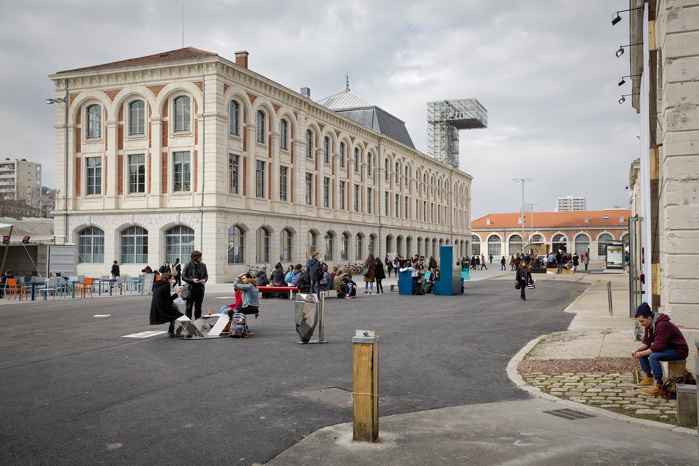
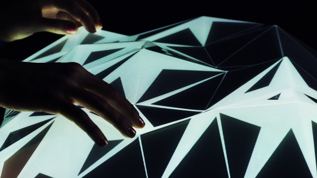

Nous sommes quatre étudiants en 5ème année design à l'École Supérieure d'Art et de Design de Saint-Étienne, deux en option graphisme et deux en option numérique. Dans le cadre de la 10ème Biennale Internationale de Saint-Étienne, sur le thème "working promesse", nous proposons une exposition virtuelle disponible uniquement sur le support web.
Le travail est en pleine mutation et les outils de conception et de production évoluent et tendent de plus en plus vers le numérique. C'est dans cette logique d'expérimentation de ces nouveaux médiums, que nous proposons un espace d'exposition en ligne. L’idée est de s’approprier les qualités qu'il présente : disponibilité, visibilité et espace illimité.
Comme une exposition matérielle, www.oop aura une temporalité, une soirée de lancement et un catalogue d’exposition. Le principe est d’utiliser le site web comme espace d’exposition réel. Il est question de donner un nouveau rapport à la déambulation, aux informations, aux œuvres…Le visiteur aura une réelle interactivité au sein de l’espace web et pourra naviguer entre les différentes étapes de votre projet.
Nous souhaitons exposer les nouveaux acteurs de la scène créative : étudiants en art / design, jeunes designers, artistes. L’idée de cette exposition est d’exposer votre travail personnel et les différentes étapes qui le constituent : de la phase de recherche, aux références, croquis préliminaires, jusqu'aux photos de projet fini.